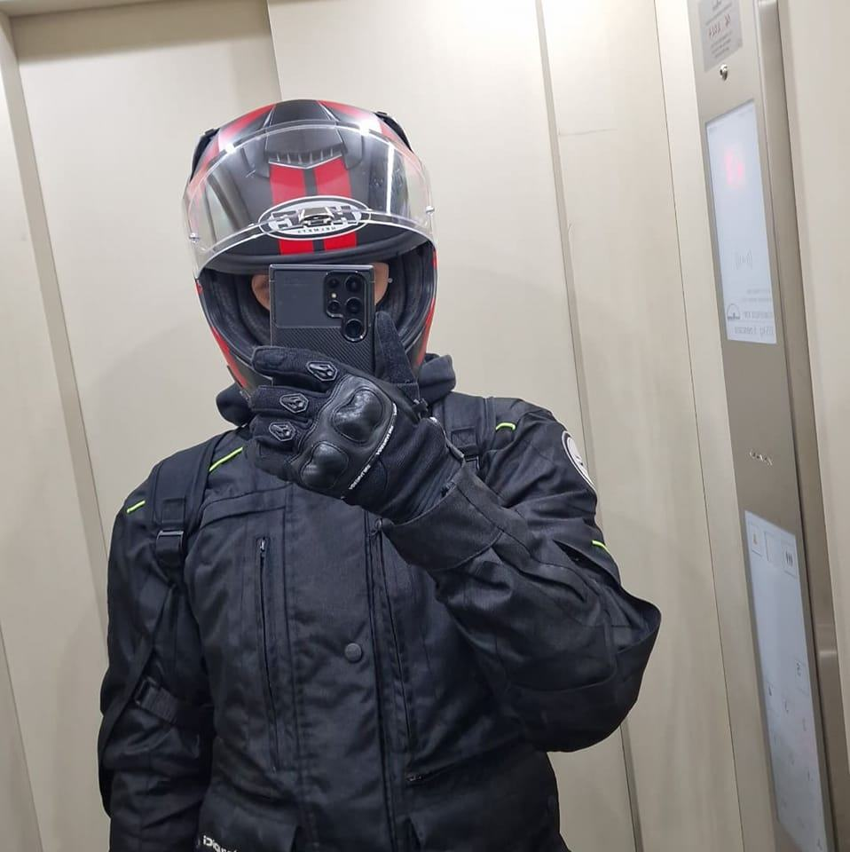

Curriculum Vitae - Ilie Marian-Ionut

Date Personale
Nume: Ilie
Prenume: Marian-Ionut
Data nasterii: 27.01.2005
Adresa: Bd. Chisinau, Bucuresti, Romania
Telefon: 0729701628
Experienta profesionala
2022-2023: Lucrator Comercial JD Sports
Responsabilitati: Servirea clientilor, aranjarea produselor in magazin, gestionarea stocurilor.
Educatie si formare
2019-2023: Liceul Teoretic "Dante Alighieri", Bucuresti
Profil: Matematica-Informatica Intensiv Engleza
2023-prezent: Universitatea Nationala de Stiinte si Tehnologie Politehnica Bucuresti
Facultatea de Inginerie Industriala si Robotică
Specializare: Informatica Industriala
Competente Personale
Limba materna: Romana
Limbi Straine: Engleza - Nivel Avansat (C1), Franceza - Nivel Incepator (A1)
Competențe digitale: MS Office, Programe de grafica foto (Photoshop, Lightroom), Proiectare 3D (Catia, Fusion, Solidworks), Programare (C++, Python)
Suport tehnic: Instalare si configurare sisteme de operare (Windows, Linux), Reparatii hardware si software pentru PC si laptopuri
Abilitati interpersonale: Lucru in echipa, Comunicare eficienta, Adaptabilitate
Informatii Suplimentare
Certificari: ECDL, Cisco Networking Academy
Permis de conducere: Categoriile A1 si B